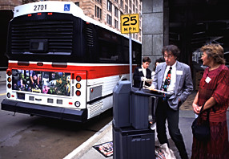

Community Partners in neighborhood libraries: Cheryl Engel [right],
librarian, Hazelwood Branch Carnegie Library delivers her presentation. |
Hi...I'm Cheryl Engel from the Hazelwood Branch Library. Almost 100 years
ago Andrew Carnegie founded a system of branch libraries as centers of information,
education, recreation, and culture in residential communities here in our
city.
Our branch libraries continue to fill that mission and that's why the
Hazelwood Branch --- along with Allegheny Regional, Beechview, Homewood,
Lawrenceville and West End branches felt particularly enthusiastic about
the End of the Line project. Carolyn and Lisa came to Hazelwood Branch last
year to meet our community. Senior citizens brought old photographs and
memorabalia which were scanned, photographed and recorded. Community leaders
discussed the neighborhood --- past and future --- in a session taped by
Carolyn. Children and young adults participated in an art project led by
Lisa collaging current heroes with historic images. A great day was had
by all and now we can see this celebration of community on our buses and
through free internet access at our libraries. Thank you Carolyn and Lisa
for initiating this project. |